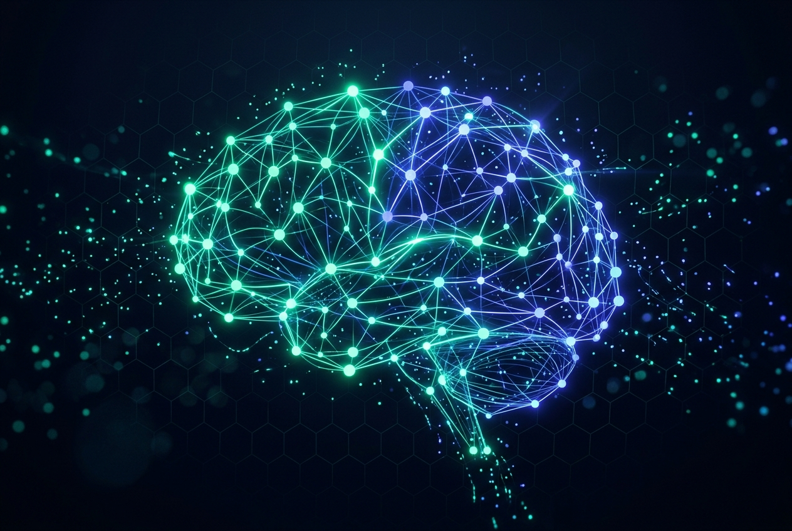

01Local RAG AI Assistant
A privacy-first Retrieval-Augmented Generation application that runs local models and answers questions from custom knowledge sources without relying on external cloud AI services.
- Local document ingestion and contextual retrieval
- Python pipeline with local LLM orchestration
- Capstone for Microsoft’s AI Innovators program
PythonRAGLocal LLMs